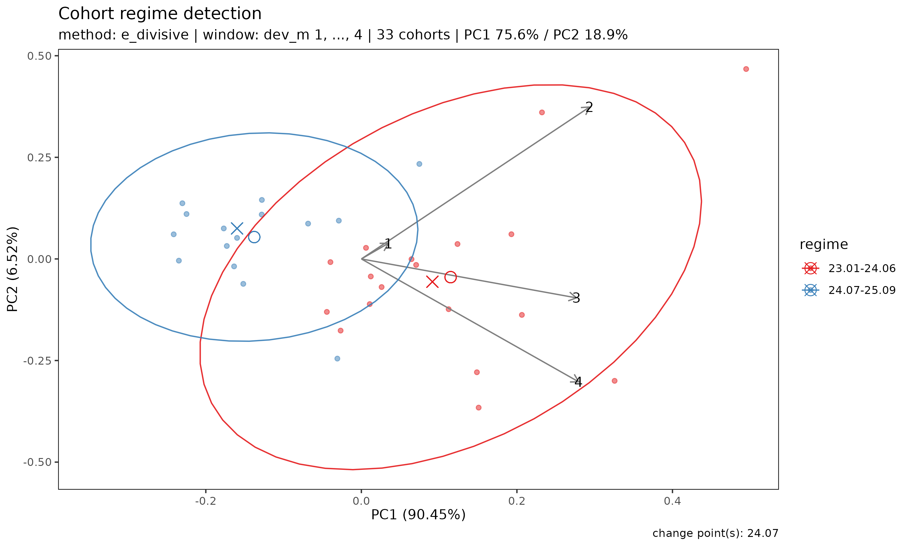

Regime: detecting structural breaks across underwriting cohorts
Source:vignettes/regime.Rmd
regime.RmdMotivation
When analysing a portfolio of long-duration health insurance cohorts, a practitioner often asks two questions:
- Are recent underwriting cohorts behaving differently from earlier cohorts?
- If so, when did the change happen?
In long-term insurance, the cohort patterns most commonly break under one of four triggers:
- Drastic premium adjustment — large up- or down-revision of rates
- Product coverage content change — restructuring of benefits, exclusions, or term
- Sum insured limit change — adjustment of per-policy maximum
- Underwriting guideline change — eligibility, declarations, or loading rule revisions
The bundled experience dataset’s SUR coverage carries a
synthetic 2024-04 break representing one of these triggers, so the
demonstration below has a clear shift for detect_regime()
to find.
A visual inspection of plot(tri_sur) can suggest that
recent cohorts have lower early loss ratios than older ones, but
eye-balling a bundle of trajectories is an unreliable way to locate a
structural shift — especially when observation windows differ across
cohorts.
detect_regime() answers both questions in one call —
grouping underwriting cohorts into regimes (groups of
cohorts that share similar loss dynamics) and reporting the break dates
between groups. It treats each underwriting cohort as a feature vector
(its trajectory over the first window development periods),
orders cohorts by underwriting date, and applies a change-point or
clustering method to the resulting multivariate sequence.
Data and setup
library(lossratio)
data(experience)
tri_sur <- build_triangle(
experience[coverage == "SUR"],
groups = "coverage",
cohort = "uy_m",
calendar = "cy_m",
loss = "loss_incr",
premium = "premium_incr"
)Detecting regimes
The default method is "e_divisive", a non-parametric
multivariate change-point algorithm that determines the number of
regimes from the data:
r <- detect_regime(tri_sur, method = "e_divisive")
r
#> <Regime>
#> method : e_divisive
#> target : lr
#> window (window) : dev_m 1-4
#> cohorts : 33 analysed (3 dropped)
#> regimes : 2
#> breakpoints: 24.07
#> PC1 / PC2 : 75.6% / 18.9%The window argument controls how many development
periods define the cohort feature vector. Only cohorts observed for at
least window periods are analysed; cohorts with shorter
windows are dropped. Increasing window captures more of the
trajectory but drops more recent cohorts. With the default
window = "auto", a maturity-aware sweep picks the largest
window that retains enough cohorts.
Summary and per-regime membership
summary(r)
#> Cohort regime detection summary
#> method : e_divisive
#> target : lr
#> window : dev_m 1-4
#> cohorts : 33 analysed (3 dropped)
#>
#> Regimes (2):
#> 1: 23.01-24.06 (18 cohorts)
#> 2: 24.07-25.09 (15 cohorts)
#>
#> Breakpoints: 24.07
r$labels
#> coverage cohort regime regime_id
#> <char> <Date> <fctr> <int>
#> 1: SUR 2023-01-01 23.01-24.06 1
#> 2: SUR 2023-02-01 23.01-24.06 1
#> 3: SUR 2023-03-01 23.01-24.06 1
#> 4: SUR 2023-04-01 23.01-24.06 1
#> 5: SUR 2023-05-01 23.01-24.06 1
#> 6: SUR 2023-06-01 23.01-24.06 1
#> 7: SUR 2023-07-01 23.01-24.06 1
#> 8: SUR 2023-08-01 23.01-24.06 1
#> 9: SUR 2023-09-01 23.01-24.06 1
#> 10: SUR 2023-10-01 23.01-24.06 1
#> 11: SUR 2023-11-01 23.01-24.06 1
#> 12: SUR 2023-12-01 23.01-24.06 1
#> 13: SUR 2024-01-01 23.01-24.06 1
#> 14: SUR 2024-02-01 23.01-24.06 1
#> 15: SUR 2024-03-01 23.01-24.06 1
#> 16: SUR 2024-04-01 23.01-24.06 1
#> 17: SUR 2024-05-01 23.01-24.06 1
#> 18: SUR 2024-06-01 23.01-24.06 1
#> 19: SUR 2024-07-01 24.07-25.09 2
#> 20: SUR 2024-08-01 24.07-25.09 2
#> 21: SUR 2024-09-01 24.07-25.09 2
#> 22: SUR 2024-10-01 24.07-25.09 2
#> 23: SUR 2024-11-01 24.07-25.09 2
#> 24: SUR 2024-12-01 24.07-25.09 2
#> 25: SUR 2025-01-01 24.07-25.09 2
#> 26: SUR 2025-02-01 24.07-25.09 2
#> 27: SUR 2025-03-01 24.07-25.09 2
#> 28: SUR 2025-04-01 24.07-25.09 2
#> 29: SUR 2025-05-01 24.07-25.09 2
#> 30: SUR 2025-06-01 24.07-25.09 2
#> 31: SUR 2025-07-01 24.07-25.09 2
#> 32: SUR 2025-08-01 24.07-25.09 2
#> 33: SUR 2025-09-01 24.07-25.09 2
#> coverage cohort regime regime_id
#> <char> <Date> <fctr> <int>Visualisation
plot(r) produces a PCA scatter of cohort trajectories
coloured by detected regime. If the regimes are well-separated in PCA
space, the structural shift is visually confirmed:
plot(r)
Arrows indicate the loadings of each development-period feature on the PC axes — useful for reading how the regimes differ (e.g. whether the shift primarily affects early or late development).
Choice of target
The target argument controls which signal the
change-point algorithm operates on. Different targets surface different
kinds of regime change, and each has its own failure mode. Pick the
target that matches the event you suspect — and always cross-check with
domain knowledge.
Order:
c("lr", "loss_ata", "premium_ata", "loss_ed", "premium_ed", "loss", "premium")
— cleanest to riskiest.
| Scenario to detect | Recommended target
|
Caveat |
|---|---|---|
| General LR projection accuracy (default) | "lr" |
Differential growth (loss vs premium scaling unevenly) can produce smooth drift that |
| is mis-labelled as a sharp break. | ||
Loss development speed change (CL f) |
"loss_ata" (diagnostic)
|
Loses dev = 1 row + complete-row requirement → sample size shrinks; over-sensitive on |
| low-CV factors. | ||
| Premium recognition speed change |
"premium_ata" (diagnostic)
|
Same caveats as "loss_ata". |
Loss intensity per unit exposure (ED g) |
"loss_ed" (diagnostic)
|
Cross-normalised by premium; harder to interpret in isolation. |
Same as premium_ata (API symmetry) |
"premium_ed" (alias)
|
Equivalent to premium_ata after PCA standardization —
same breakpoints. |
| Loss level shift (claim handling, coverage) | "loss" |
Raw cumulative — book-size growth dominates; false positives common. |
| Premium level shift (rate, channel) | "premium" |
Same caveat as "loss". |
Notes:
-
"lr"is the default because the loss ratio is the package’s projection target and is naturally scale-invariant (immune to book-size growth). -
"loss"/"premium"use the raw cumulative columns and are most useful when the suspected event is a sudden absolute level shift (e.g. a channel termination dropping premium volume). Smooth book growth will frequently produce false positives — read every result alongside a known timeline of underwriting / claims-handling events. -
"loss_ata","premium_ata","loss_ed"are diagnostic targets derived inline (not stored on theTriangle). They map directly to the CLf-factor / EDg-factor used during fitting, so a break detected here corresponds to a violation of the model’s stationarity assumption. Use them when you want to attribute a regime change to a specific structural mechanism.
# Try several targets and compare the breakpoints they surface
detect_regime(tri_sur, target = "lr")
detect_regime(tri_sur, target = "loss")
detect_regime(tri_sur, target = "loss_ata")The breakpoints across targets are usually similar for strong, real regime shifts and diverge when the signal is weak or driven by book-size growth — both useful diagnostics.
Choice of method
"e_divisive"— preferred default. Multivariate, non-parametric, auto-detects the number of regimes at a given significance level. Slightly slower than the alternatives but requires no a priori choice ofn_regimes."pelt"— fast univariate change-point detection applied to the first principal component. May return multiple breakpoints and is useful when the trajectory variation is dominated by one axis (checkPC1 %in theprint()output — if > 70%, PELT is reliable; if much lower, prefer"e_divisive")."hclust"— Ward hierarchical clustering on the scaled feature matrix, cut ton_regimesclusters (default2). Ignores chronological order and is best used as a sanity check: if the chronological methods locate a breakpoint at timetandhclustproduces the same two groups (all pre-tin one cluster, all post-tin the other), the shift is structural rather than an artefact of the method.
In practice, agreement across all three methods — as in the SUR
example above, where "e_divisive", "pelt", and
"hclust" all locate 24.04 as the regime
boundary — is strong evidence of a real underwriting/rate shift.
Forcing the number of regimes
If you want to compare a fixed number of regimes — for example,
two-vs-three regime hypotheses — pass n_regimes:
r2 <- detect_regime(tri_sur, method = "e_divisive", n_regimes = 3)
summary(r2)
#> Cohort regime detection summary
#> method : e_divisive
#> target : lr
#> window : dev_m 1-4
#> cohorts : 33 analysed (3 dropped)
#>
#> Regimes (3):
#> 1: 23.01-24.06 (18 cohorts)
#> 2: 24.07-25.06 (12 cohorts)
#> 3: 25.07-25.09 (3 cohorts)
#>
#> Breakpoints: 24.07, 25.07For "e_divisive" and "pelt",
n_regimes is a request (the algorithm will return up to
that many regimes if supported by the data). For "hclust",
it is a hard cut.
Multi-group detection
A Triangle built with multiple groups can be passed
directly — detection runs independently per group and results are
gathered into a single Regime object.
tri_all <- build_triangle(
experience,
groups = "coverage",
cohort = "uy_m",
calendar = "cy_m",
loss = "loss_incr",
premium = "premium_incr"
)
r_all <- detect_regime(tri_all, by = "coverage", method = "e_divisive")
r_all$breakpoints
#> coverage breakpoint regime_id pre_value post_value magnitude
#> <char> <Date> <int> <num> <num> <num>
#> 1: SUR 2024-07-01 2 0.9065895 0.5479919 0.3585976In multi-group mode r_all$breakpoints is a
data.table with the group column plus a
breakpoint Date column; r_all$labels likewise
gains the group column; r_all$n_regimes is a named integer
vector keyed by group value. The r_all$multi_group flag
distinguishes the layout from the single-group scalar form.
If a group has too few cohorts for the chosen window,
that group is skipped with a warning (others continue). If all
groups fail, detect_regime() errors out.
plot(r_all) returns a named list of per-group
ggplot panels (keyed by group value).
Relation to fit_lr()
detect_regime() is a preprocessing diagnostic,
not a modification of the fit_lr() framework. Its output is
useful in two ways:
Stratified fitting: if two clearly distinct regimes are detected, fitting
fit_lr()separately on each regime subset often yields sharper stable-CLR estimates than a pooled fit.Rate-change documentation: a detected breakpoint provides a data-driven anchor for the preprocessing recommendations outlined in the Limitations section of the companion paper (premium on-leveling or exposure decomposition
V = C^P / r).